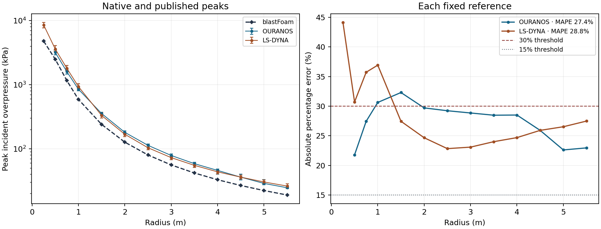
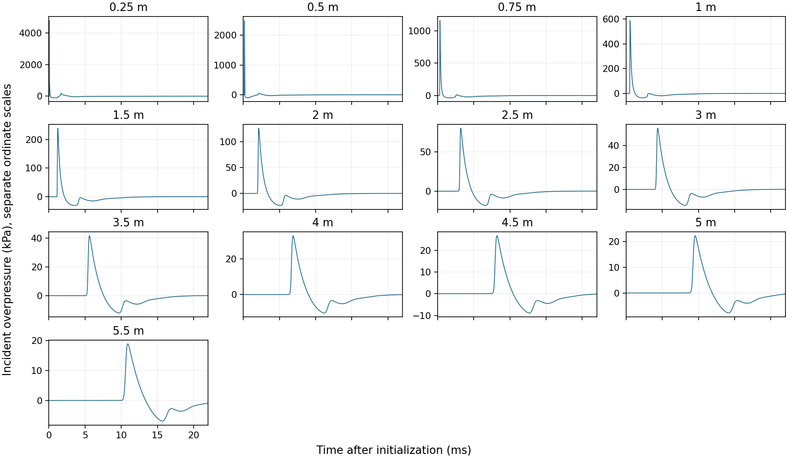

作业 8941511 · 13/13 点完整覆盖 0–22 ms。峰值以静压减去 101325 Pa，零时刻对应瞬时产物初始化。
OURANOS 12 项 MAPE 27.37% · LS-DYNA 13 项 MAPE 28.78%。 参考来自论文图 5 数值曲线，读图范围由误差棒显示。逐点在图读范围内取值，对应的组 MAPE 范围为 OURANOS 21.50%–32.30%，LS-DYNA 22.86%–34.59%。
终态正常。原生日志全域最低绝对压力 34.33 Pa（1.259 ms）， 最低温度 20.54 K（1.259 ms）。全域三维场写出于 0、11 和 22 ms，极值时刻仅保留全域日志。暂缓入选。
原文图、参考与点位规则 · 完整计算设置 · C 集群归档核验 · 独立复算 · 逐点数据


| 参考组 | 距离（m） | 论文峰值（kPa） | 本次峰值（kPa） | APE |
|---|---|---|---|---|
| OURANOS | 0.5 | 3189.770 | 2494.841 | 21.79% |
| OURANOS | 0.75 | 1595.907 | 1157.888 | 27.45% |
| OURANOS | 1 | 848.343 | 588.483 | 30.63% |
| OURANOS | 1.5 | 353.893 | 239.565 | 32.31% |
| OURANOS | 2 | 180.152 | 126.628 | 29.71% |
| OURANOS | 2.5 | 112.884 | 79.886 | 29.23% |
| OURANOS | 3 | 78.476 | 55.834 | 28.85% |
| OURANOS | 3.5 | 58.468 | 41.819 | 28.47% |
| OURANOS | 4 | 45.883 | 32.804 | 28.51% |
| OURANOS | 4.5 | 36.007 | 26.676 | 25.92% |
| OURANOS | 5 | 28.751 | 22.249 | 22.61% |
| OURANOS | 5.5 | 24.602 | 18.954 | 22.96% |
| LS-DYNA | 0.25 | 8557.183 | 4780.920 | 44.13% |
| LS-DYNA | 0.5 | 3600.733 | 2494.841 | 30.71% |
| LS-DYNA | 0.75 | 1801.520 | 1157.888 | 35.73% |
| LS-DYNA | 1 | 933.093 | 588.483 | 36.93% |
| LS-DYNA | 1.5 | 330.215 | 239.565 | 27.45% |
| LS-DYNA | 2 | 168.099 | 126.628 | 24.67% |
| LS-DYNA | 2.5 | 103.523 | 79.886 | 22.83% |
| LS-DYNA | 3 | 72.594 | 55.834 | 23.09% |
| LS-DYNA | 3.5 | 55.030 | 41.819 | 24.01% |
| LS-DYNA | 4 | 43.561 | 32.804 | 24.69% |
| LS-DYNA | 4.5 | 36.007 | 26.676 | 25.92% |
| LS-DYNA | 5 | 30.283 | 22.249 | 26.53% |
| LS-DYNA | 5.5 | 26.139 | 18.954 | 27.49% |